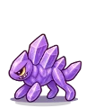

Wiki › Opponents › Crystalling

Crystalling
Level 365 Saturn
- Stamina
- ❤️ 220,822
- Attack
- ⚔️ 1,245
- XP
- ⭐ 136,290
- Coins
- 🪙 2,790–4,184
- Shoots from afar
- no
- Comes to challenge you
- yes
What it drops
| Item | AmountQty | Chance | Rarity |
|---|---|---|---|
| 1–2 | 30% | Common | |
| 1–3 | 30% | Common | |
| 1 | 7.0% | Uncommon | |
| 1 | 5.0% | Rare | |
| 1 | 2.0% (1 in 50) | Epic | |
| 1 | 0.90% (1 in 112) | Legendary | |
| 1 | 0.40% (1 in 250) | Epic | |
| 1 | 0.02% (1 in 4,999) | Legendary |
How to read: the % is the chance to drop from each opponent you beat. If you are far above its level, the chance goes down (6 to 9 levels above: 80%; 10 to 14: 40%; 15 to 19: 15%; 20 or more: none). An item asked for by a quest you accepted drops at full chance.
Where it appears
- Saturn — Crystal Rings — em cima, on the left of the map (northwest) (4 on the map)
- 🎯 Violet Crystal Cave — in the middle of the map (10 on the map)
🧭 Trip: 🚀 Go to the Space Station (in Rio, with Dr. Estela — you need the Astronaut Suit), and from there the Control Tower takes you to Saturn.
🧭 Path: the trip takes you right there.
Quests with this opponent
- Hunt: Violet Crystal Cave (Level 360)
- Great Hunt: Violet Crystal Cave (Level 363)
What it says
Ding!
Hard as crystal!